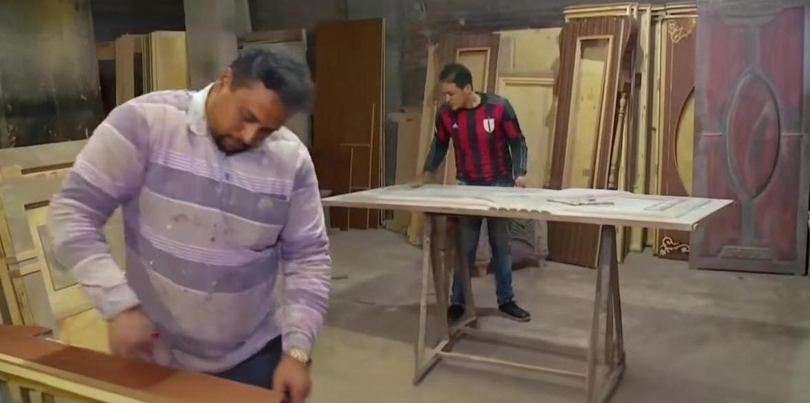
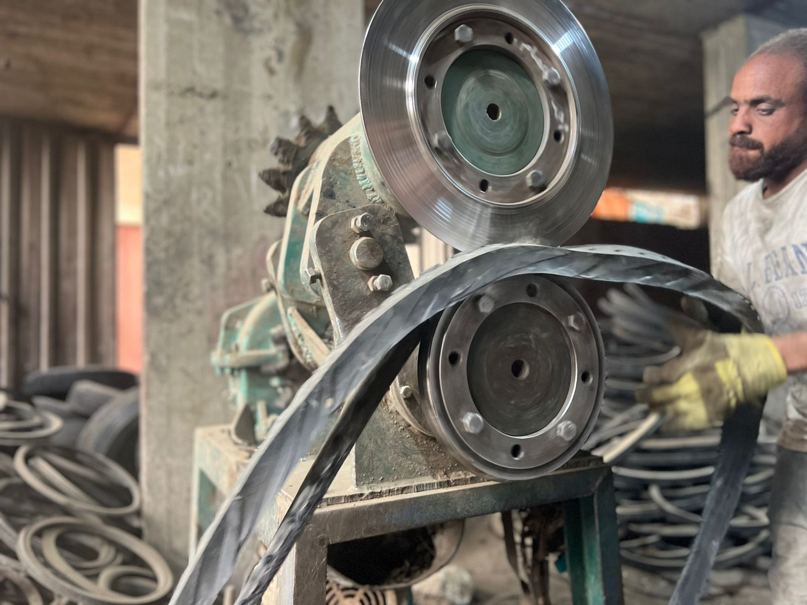

بين البقاء والتراجع.. صناعة الأثاث في كتامة الغابة تواجه تحديات العصر

مع أصوات ماكينات التقطيع ورائحة الخشب التي تملأ شوارع قرية كتامة الغابة التابعة لمركز بسيون بمحافظة الغربية، تستمر ورش الأثاث في العمل يوميًا رغم الظروف الاقتصادية الصعبة وارتفاع أسعار الخامات. وتُعد صناعة الأثاث من أقدم المهن داخل القرية، حيث اعتمد عليها عدد كبير من الأهالي كمصدر أساسي للرزق لسنوات طويلة.
ويقول أحمد بدوي، صاحب ورشة نجارة:
"زمان الشغل كان أحسن بكتير، والورش كانت شغالة طول السنة تقريبًا، لكن دلوقتي الحركة بقت أضعف والأسعار بقت عالية."
ويؤكد عدد من العاملين أن المهنة لم تعد تجذب الشباب كما كان يحدث في الماضي، بسبب احتياجها لمجهود كبير وعدد ساعات عمل طويلة، إلى جانب اتجاه البعض للبحث عن وظائف أكثر استقرارًا.
وقال محمد عبد الله، نجار:
"الشباب دلوقتي بيدور على شغل سهل أو مرتب ثابت، لكن النجارة محتاجة صبر وتعلم سنين."
وتُعد زيادة أسعار الأخشاب من أبرز المشكلات التي تواجه أصحاب الورش، حيث ارتفعت تكاليف الإنتاج بشكل واضح خلال السنوات الأخيرة، وهو ما أدى إلى زيادة أسعار الأثاث وتراجع قدرة بعض المواطنين على الشراء.
ويضيف السيد سالم، صاحب معرض أثاث:
"سعر الخشب والنقل والكهرباء زادوا جدًا، وده بيأثر على الورش وعلى الزبون في نفس الوقت."
ورغم حالة الركود التي تشهدها بعض الفترات، إلا أن مواسم الزواج ما زالت تمثل فرصة لتحريك السوق نسبيًا، حيث يزيد الإقبال على شراء الأثاث وتجهيز المنازل.
كما تواجه الورش الصغيرة منافسة قوية من المصانع الكبيرة التي تعتمد على الإنتاج بكميات ضخمة وأسعار أقل، وهو ما يضع أصحاب الورش التقليدية أمام تحديات مستمرة للحفاظ على زبائنهم. ورغم كل هذه الصعوبات، ما زالت صناعة الأثاث توفر فرص عمل لعدد كبير من أبناء القرية، سواء داخل الورش أو في أعمال النقل والتشطيب والدهانات.
ويؤكد أهالي كتامة الغابة أن المهنة ما زالت جزءًا أساسيًا من هوية القرية، حتى مع التغيرات الاقتصادية الحالية، في محاولة للحفاظ على حرفة توارثتها الأجيال منذ سنوات طويلة.

